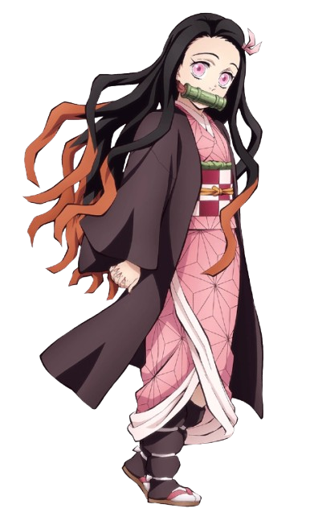
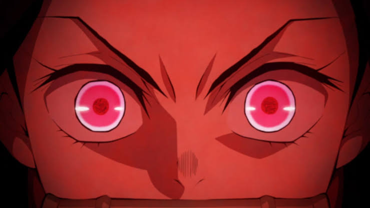
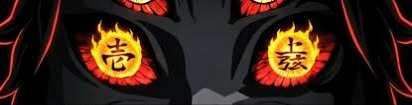
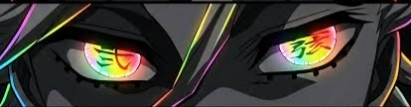
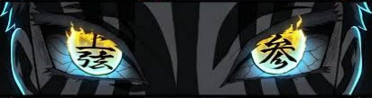
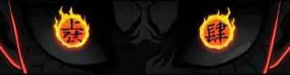
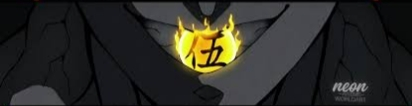
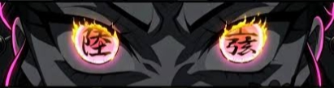
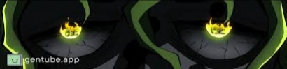
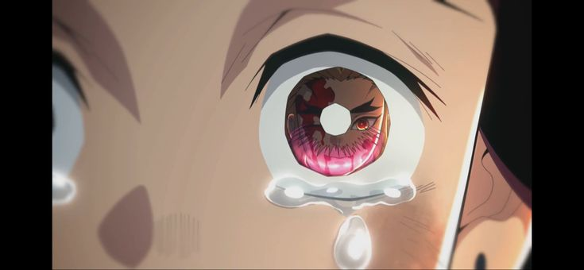

About Demon Slayer Wiki (Fan-Made)
A Wikipedia-style fan site for Demon Slayer: Kimetsu no Yaiba

Please rotate your device to landscape mode for the best experience.
A Wikipedia-style fan site for Demon Slayer: Kimetsu no Yaiba


Whether you're a Corps veteran who has memorized every Breathing Style or a newcomer who just finished your first episode, this is a place made for you. [DEMON SLAYER WIKIPEDIA] is a fan-made, Wikipedia-style site dedicated to the world of Demon Slayer: Kimetsu no Yaiba, with a special focus on character arcs and the images that capture their most powerful moments.

Demon Slayer is full of characters who grow, struggle, break, and rise again. Tanjiro's determination, Zenitsu's courage, Inosuke's wild spirit, Nezuko's quiet strength, and the Hashira's burning resolve all deserve to be celebrated. This site gathers character arc images in one place so you can relive those moments and see how each character's journey unfolds.
Here you'll find character arc images showing key turning points in each character's story, character pages in a clean, easy-to-browse, Wikipedia-style layout, and fan-made organization so everything is easy to find and enjoy.

This website started as a mini project, built by one fan who simply loves the series. I'm the only person behind it, so every page, layout, and design choice comes from my own passion for Demon Slayer. It isn't a big studio production, just a fan with a keyboard and a lot of hype. ⚔️

Heads up, Demon Slayer Corps! This site covers character arcs, so spoilers are expected. Pages may reveal major plot points, character deaths, power-ups, and story twists from the anime and manga.
If you haven't finished the series, browse carefully. Pages with major spoilers may be marked with a warning where possible, and please don't spoil things for others in any comments or discussions linked to this site.
Watch first, read later, and keep your flame burning! 🔥

Demon Slayer: Kimetsu no Yaiba and all of its characters, names, images, and related materials are the property of their respective owners, including Koyoharu Gotouge, Shueisha, Aniplex, and Ufotable.
All character images, screenshots, and artwork shown here belong to their original creators and rights holders. They are shown for fan appreciation, commentary, and educational purposes only, in the spirit of fair use.
This website is not affiliated with, endorsed by, or sponsored by any of the official owners or creators of Demon Slayer.
No copyright infringement is intended. If you are a rights holder and would like something removed or credited differently, please contact me (details below) and I will respond promptly.

The original content of this website, including my written text, page layouts, and design, is my own work and is protected.
© 2026 [GIANICON]. All rights reserved for original content.
Please don't copy, republish, or claim my original work as your own without permission. Sharing a link to the site is always welcome!

Huge thanks to Koyoharu Gotouge, creator of the original Demon Slayer manga, for the incredible story and characters; Ufotable, for the stunning anime adaptation that brought the world to life; and Aniplex and Shueisha, for publishing and distributing the series.
Thanks also to my fellow fans, for keeping the Demon Slayer community alive and inspiring projects like this one, and to Wikipedia, for the inspiration behind this site's layout and style.

Got a question, a suggestion, a correction, or a copyright concern? I'd love to hear from you! You can reach me at gianhilario8@gmail.com or on social media at [FB:Gian Icon Hilario,IG:clsgan_tax].
I read every message, and I'll do my best to reply quickly.

Thank you for visiting, and thank you for loving Demon Slayer as much as I do. May your resolve stay unbreakable and your Breathing always steady. 🌸
"Set your heart ablaze." 🔥